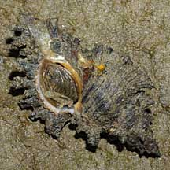
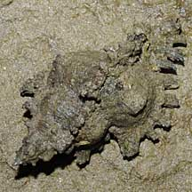
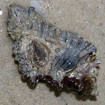
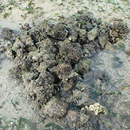
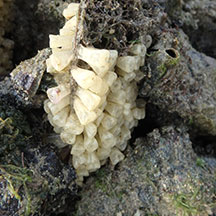
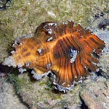
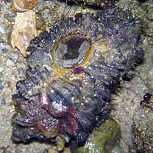
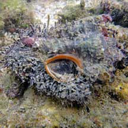

|
|
| shelled snails text index | photo index |
| Phylum Mollusca > Class Gastropoda > Family Muricidae |
| Reef
murex Chicoreus sp.* Family Muricidae updated Aug 2020 Where seen? This large but well camouflaged snail is usually found on boulders, rocks and hard surfaces as well as sandy areas near coral reefs on our Southern shores. Features: 5-7cm long. Shell thick with rows of fronds or spikes along the length of the shell. There are usually three spikes along the siphonal canal. The shell opening is smooth, operculum is made of a horn-like material. The following are the two commonly seen murex snails found on and near our reefs. They are difficult to tell apart for certain in the field. Chicoreus brunneus (Burnt murex) is more squat, rhomboid in outline, with white or light pink shell opening and deep pink lips. Chicoreus torrefactus (Firebrand murex) is more slender, more pointed at both ends (spindle-shaped) with white shell opening and yellow or orange lips. |
 Tanah Merah, Aug 09 |
 Tanah Merah, Aug 09 |
 Lazarus Island, Feb 11 |
| What does it eat? Like other drills in the Family Muricidae, this snail can also drill through shells. They are said to feed extensively on the venus clam Gafrarium (Family Veneridae) by drilling a neat hole through the shell. We have often seen them suspiciously clasping a Bazillion snail (Batillaria zonalis). |
 Many snails clustered together laying egg capsules. Cyrene Reef, Jul 17 |
 Egg capsules Cyrene Reef, Jul 17 |
| Baby drills Once, many clusters of many snails were seen on Cyrene Reef apparently laying egg capsules on dead Fan clam shells and other hard surfaces. Human uses: Elsewhere, this snail is frequently collected for food and its shell used for shellcraft. In some places, populations have been greatly reduced due to over-collection. |
*Species are difficult to positively identify without close examination.
On this website, they are grouped by external features for convenience of display.
| Reef murex on Singapore shores |
On wildsingapore
flickr
|
| Other sightings on Singapore shores |
 Pulau Senang, Aug 10 |
 Terumbu Salu, Jan 10 |
 Terumbu Buran, Nov 10 |
|
Links
References
|